1. Grundidee des Programms
Der Quicksafe Unterweisungs-Generator erstellt mehrsprachige Unterweisungsnachweise für neue Mitarbeiter. Das Programm verwaltet Firmendaten, Ansprechpartner, Sicherheitsregeln, Unterweisungsphasen, Arbeitszeiten und Übersetzungen.
2. Für wen ist das Programm gedacht?
Quicksafe richtet sich an kleine und mittlere Betriebe, die Erstunterweisungen einfacher, einheitlicher und mehrsprachig dokumentieren möchten.
3. So startest du in 5 Minuten
Für den ersten Test muss nicht jede Einstellung perfekt sein. Wichtig ist, einmal den kompletten Ablauf durchzuspielen.
- ZIP vollständig entpacken und das Programm aus dem entpackten Ordner starten.
- Firmendaten & Design öffnen und Firma, Farbe oder Logo prüfen.
- Inhalte prüfen: Ansprechpartner, Sicherheitsregeln, Unterweisungsphasen und Arbeitszeiten.
- Übersetzungen öffnen und fehlende Übersetzungen ergänzen oder kontrollieren.
- Unterweisung öffnen, Testname eintragen und ein PDF erstellen.
4. Erster Start & Windows-Sicherheitshinweise
Der Quicksafe Unterweisungs-Generator ist als portables Windows-Programm gedacht. Er muss nicht klassisch installiert werden. Trotzdem können beim ersten Start Windows- oder Sicherheitsmeldungen erscheinen, besonders wenn die EXE neu heruntergeladen oder von einem anderen PC kopiert wurde.
Empfohlener Umgang
- ZIP-Datei vollständig entpacken und das Programm aus dem entpackten Ordner starten.
- Nur Versionen verwenden, die aus einer vertrauenswürdigen Quelle stammen.
- Bei Windows-SmartScreen auf Weitere Informationen und danach auf Trotzdem ausführen klicken, wenn die Quelle bekannt und vertrauenswürdig ist.
- Falls Windows die Datei blockiert: Rechtsklick auf die EXE, Eigenschaften öffnen und unten bei Sicherheit gegebenenfalls Zulassen aktivieren.
5. Tab „Unterweisung“
Hier wird das konkrete Dokument für einen Mitarbeiter erstellt. Eingetragen werden Name, optional Personalnummer und die gewünschte Sprache.
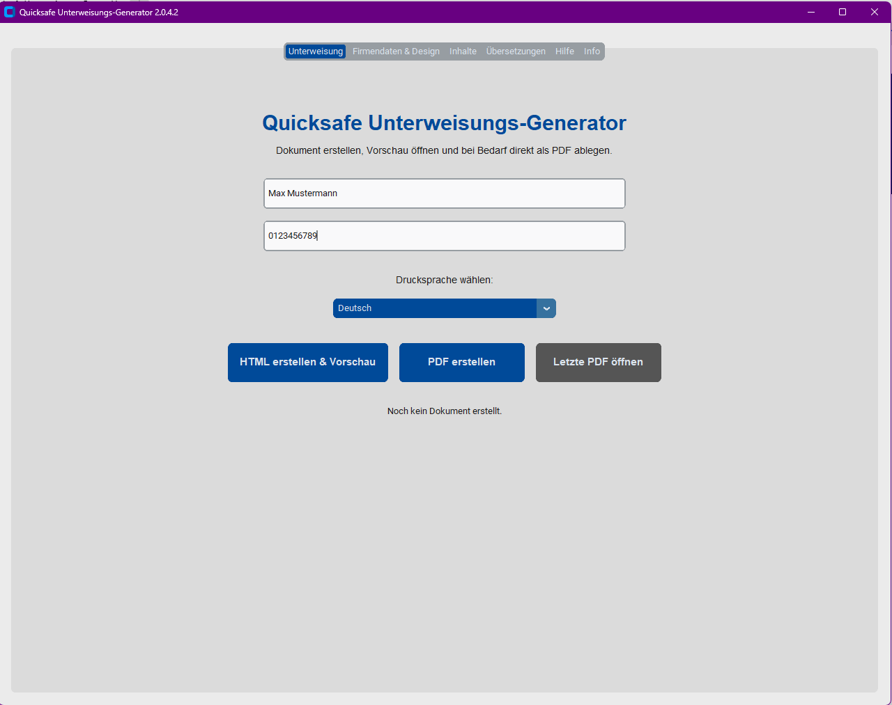
- Name des Mitarbeiters eintragen.
- Personalnummer eintragen, falls benötigt.
- Drucksprache auswählen.
- HTML-Vorschau oder PDF erstellen.
6. Tab „Firmendaten & Design“
In diesem Bereich werden die Stammdaten und das Erscheinungsbild des Dokuments gepflegt.
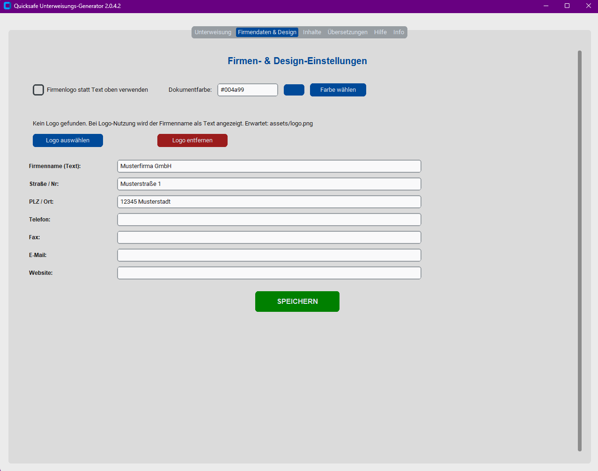
Dokumentfarbe
Die Dokumentfarbe steuert die Hauptfarbe des erzeugten Dokuments. Sie wird für Balken, Linien und Akzente verwendet. Der Farbcode kann direkt eingetragen oder über die Farbauswahl gesetzt werden.
Logo verwenden
Wenn „Firmenlogo statt Text oben verwenden“ aktiv ist, wird das hinterlegte Logo im Dokumentkopf verwendet. Über Logo auswählen wird eine Bilddatei gewählt und automatisch in den passenden Ordner kopiert. Über Logo entfernen kann es wieder gelöscht werden.
config.json, nicht fest im Programmcode.7. Tab „Inhalte“
Hier werden alle fachlichen und organisatorischen Inhalte gepflegt, die später im Unterweisungsdokument erscheinen.
7.1 Ansprechpartner und Rollen
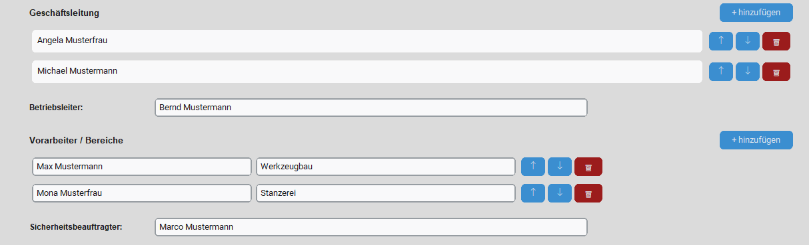
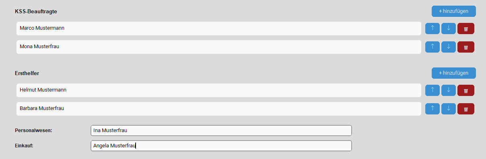
7.2 Sicherheitsregeln
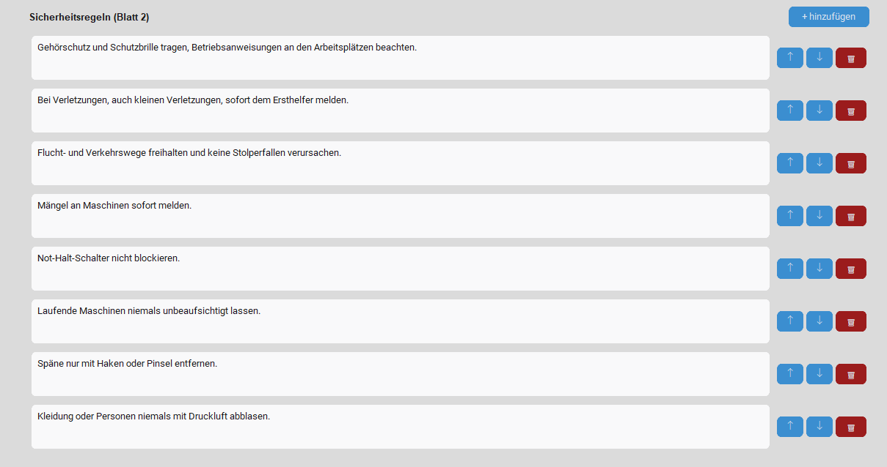
Die Sicherheitsregeln bilden den Kern von Seite 2. Jede Regel wird im Original auf Deutsch gespeichert und kann für die Fremdsprachen übersetzt werden.
7.3 Unterweisungsphasen
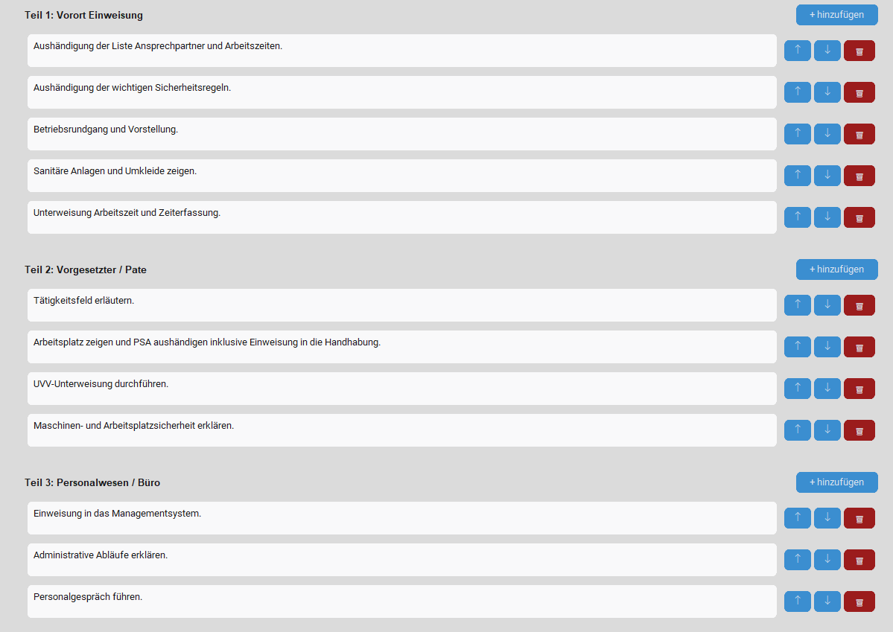
7.4 Phasen und Arbeitszeiten
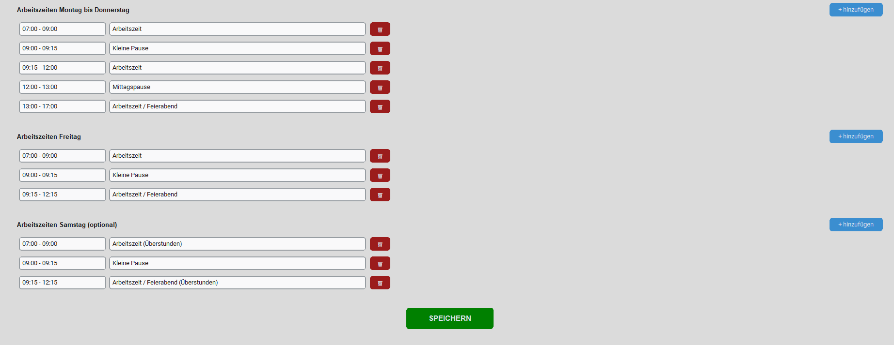
Die Arbeitszeiten sind in Gruppen aufgebaut. Standardmäßig werden Montag bis Donnerstag und Freitag gepflegt. Zusätzlich gibt es den optionalen Bereich Samstag.
- Samstag darf leer bleiben.
- Wenn Samstag leer ist, wird er im Dokument nicht angezeigt.
- Wenn Samstag Einträge enthält, erscheint Samstag automatisch auf Seite 1 im Arbeitszeiten-Block.
- Die Ausgabe ist in festen Zeit-/Beschreibungs-Spalten ausgerichtet. Lange Beschreibungen dürfen umbrechen, bleiben aber optisch sauber in ihrer Spalte.
8. Tab „Übersetzungen“
Der Übersetzungsbereich dient dazu, Sprachstände zu prüfen, zusätzliche Sprachen zu aktivieren, fehlende Übersetzungen zu ergänzen oder bestehende Übersetzungen manuell zu verbessern.
8.1 Sprachen verwalten
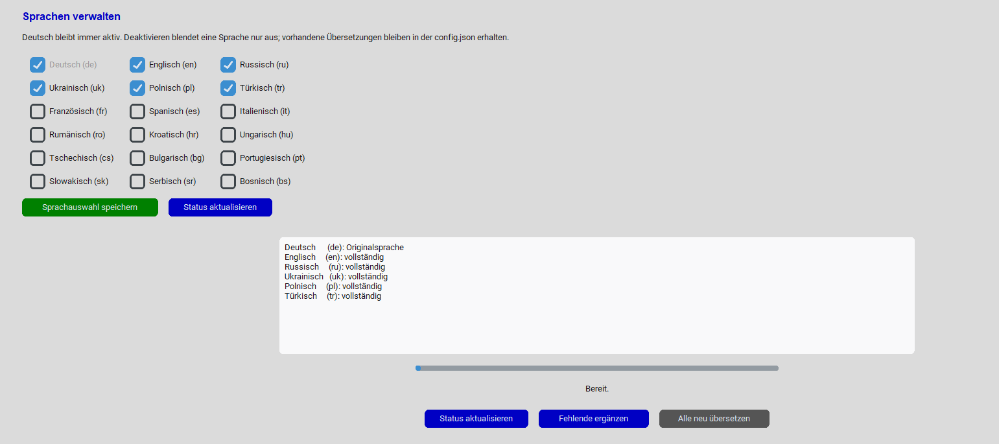
config.json zu löschen.- Deutsch bleibt immer aktiv und ist die Originalsprache.
- Aktive Sprachen erscheinen in der Drucksprachen-Auswahl, im Status und im Editor.
- Deaktivieren blendet eine Sprache nur aus. Vorhandene Übersetzungen bleiben erhalten.
- Nach Änderungen an den Haken immer Sprachauswahl speichern klicken.
8.2 Statusübersicht
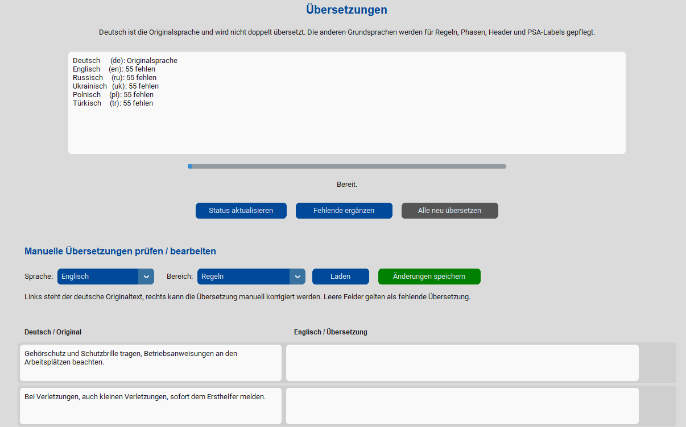
8.3 Manueller Übersetzungseditor
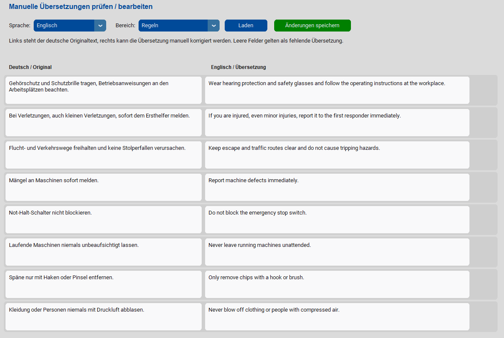
8.4 Standard- und Zusatzsprachen
Die wichtigsten Grundsprachen sind Deutsch, Englisch, Russisch, Ukrainisch, Polnisch und Türkisch. Zusätzlich können weitere europäische Sprachen aktiviert werden, zum Beispiel Französisch, Spanisch, Italienisch, Rumänisch, Kroatisch oder Portugiesisch.
9. HTML-Vorschau und PDF-Ausgabe
Das Programm kann eine HTML-Vorschau öffnen oder direkt ein PDF erzeugen. Die HTML- und PDF-Ausgabe sollen optisch deckungsgleich sein.
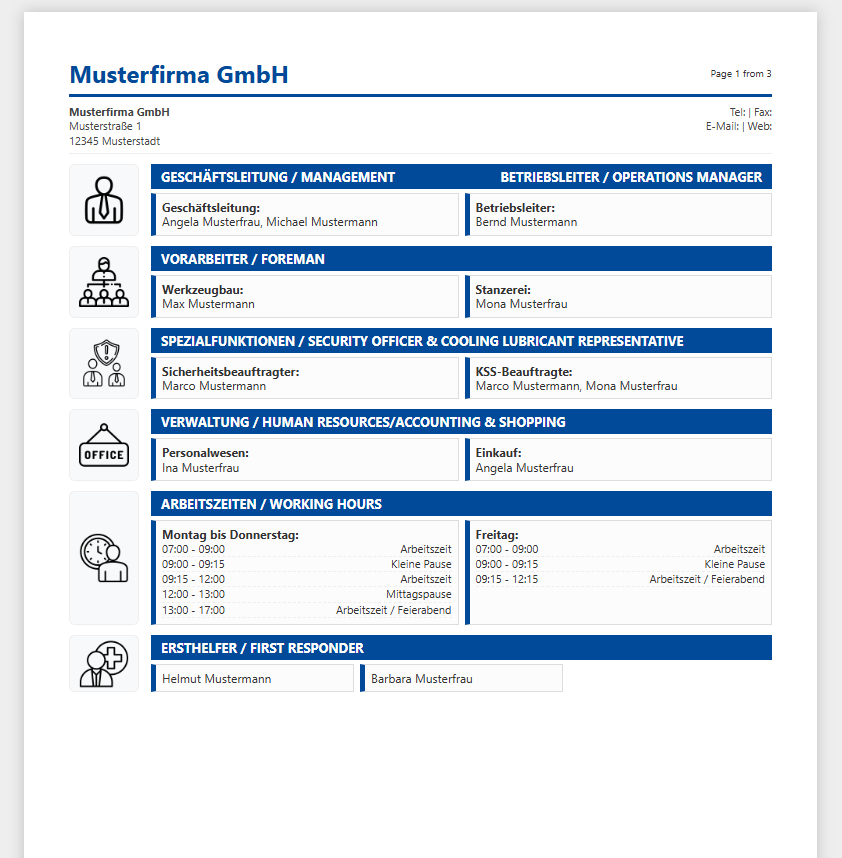
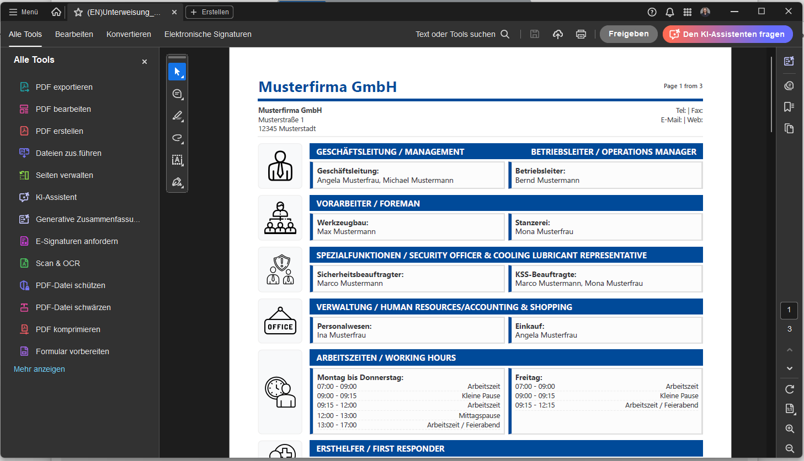
10. Wichtige Dateien & Ordner
Quicksafe ist portabel aufgebaut. Das bedeutet: Die wichtigen Daten liegen im Programmordner und können bei Bedarf gesichert oder auf einen anderen Stand zurückgesetzt werden.
| Datei / Ordner | Bedeutung |
|---|---|
config.json | Enthält alle gespeicherten Einstellungen, Firmendaten, Ansprechpartner, Sicherheitsregeln, Arbeitszeiten und Übersetzungen. Diese Datei ist praktisch die kleine lokale Datenbank des Programms. |
output | Hier speichert das Programm erzeugte HTML- und PDF-Dokumente. |
backup | Hier werden Config-Backups als ZIP-Dateien abgelegt. |
assets | Enthält Bilder und Symbole, zum Beispiel PSA-Icons und das gewählte Logo. |
docs | Enthält diese Anleitung und die dazugehörigen Screenshots. |
config.json nicht löschen, wenn eigene Inhalte bereits gepflegt wurden. Vor Experimenten lieber ein Backup erstellen.11. Backup-Funktion
Vor größeren Änderungen sollte ein Config-Backup erstellt werden. Das Backup speichert die aktuelle config.json in einer ZIP-Datei im Ordner backup.
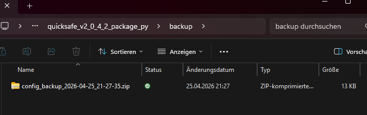
config.json, der ZIP-Dateiname enthält Datum und Uhrzeit.Backup-Regel
- Im ZIP heißt die Datei immer
config.json. - Der ZIP-Dateiname enthält Datum und Uhrzeit.
- Dadurch kann ein alter Datenstand später leicht wiederhergestellt werden.
12. Hilfe und Info
Die Tabs „Hilfe“ und „Info“ bieten Schnellzugriff auf Kurzhilfe, Anleitung, Kontakt, Ordner und Backup.
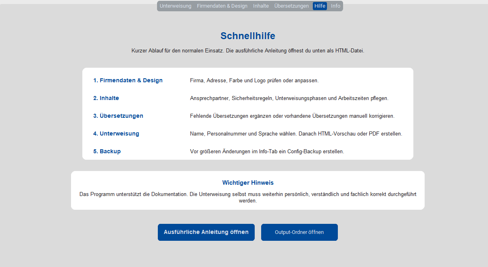
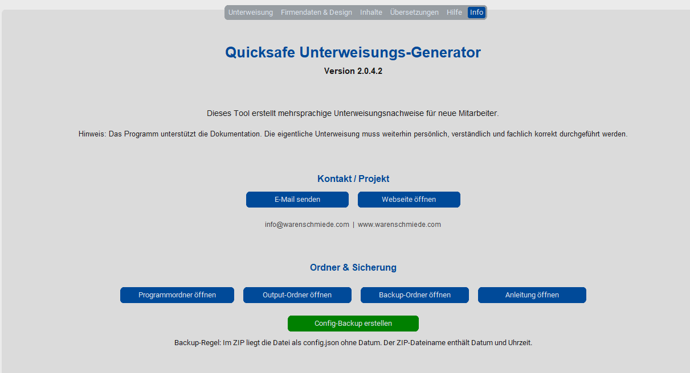
Die Kontakt-Buttons öffnen das Standard-Mailprogramm oder die Webseite. Die Ordnerbuttons führen direkt zum Programmordner, Output-Ordner, Backup-Ordner oder zur Anleitung.
13. Kurze Fehlerhilfe
| Problem | Mögliche Lösung |
|---|---|
| Programm startet nicht | ZIP vollständig entpacken und die EXE aus dem entpackten Ordner starten. Nicht direkt aus der ZIP starten. Bei SmartScreen „Weitere Informationen“ → „Trotzdem ausführen“ wählen, wenn die Quelle vertrauenswürdig ist. |
| Logo wird nicht angezeigt | Prüfen, ob ein Logo ausgewählt wurde und ob die Datei im assets-Ordner liegt. |
| Übersetzung fehlt | Tab „Übersetzungen“ öffnen, Status prüfen und fehlende Übersetzungen ergänzen oder manuell eintragen. |
| PDF wird nicht erstellt | Prüfen, ob Edge oder Chrome installiert ist. Danach erneut PDF erstellen. |
| Änderungen sind falsch | Ein vorhandenes Backup aus dem Ordner backup entpacken und die config.json zurückkopieren. |
| Samstag wird nicht angezeigt | Prüfen, ob im Tab „Inhalte“ unter Arbeitszeiten Samstag mindestens ein Eintrag vorhanden ist. Leere Samstagszeiten werden absichtlich ausgeblendet. |
| Anleitung öffnet nicht | Prüfen, ob docs/anleitung.html vorhanden ist. |